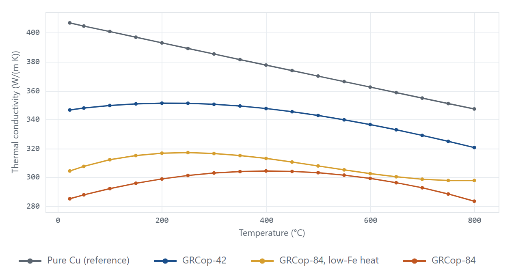

1 · I type
> /lit-fetch how GRCop-42 and GRCop-84 compare for additively manufactured rocket combustion chambers
1 · Claude returns
It searched for papers, read six, and wrote an answer. Its first line, shortened: GRCop-42 carries about half the Cr2Nb of GRCop-84, and NASA's own record says it trades some room-temperature strength for higher thermal conductivity, more ductility, easier powder atomization and faster laser powder bed fusion builds.
It couldn't get these and handed me the DOIs:
| Paper | Authors | Why it wanted it |
|---|---|---|
| Comparison of GRCop-84 to Other Cu Alloys with High Thermal Conductivities | de Groh et al., 2008 | Closed access. Wanted for GRCop-84 against other rocket copper alloys. |
| Extreme Environment Hot Fire Durability of Post Processed Additively Manufactured GRCop-Alloy Combustion Chambers | Teasley et al., 2021 | Closed access. Wanted for NASA hot-fire data on printed chambers. |
| Precipitate Size in GRCop-42 and GRCop-84 Cu-Cr-Nb Alloy Gas Atomized Powder and L-PBF Additive Manufactured Material | Seltzman & Wukitch, 2023 | Listed as open access, but the download failed. Wanted for the alloys' microstructure. |
| Copper-based alloys for structural high-heat-flux applications: a review of development, properties, and performance of Cu-rich Cu-Cr-Nb alloys | Minneci et al., 2020 | Listed as open access, but the download failed. Wanted as an independent review. |
Paper summaries: written by /lit-fetch in this turn. Report: a text-only write-up, built at the end of this turn.
2 · I type
> these are supposed to be abstract/intro style. why is that not default? with figures, digitization, etc.
2 · Claude returns
It rebuilt the report as a short article, with each plotted value taken from a table, the text, or a digitized figure in one of the papers.

One of its figures: thermal conductivity of the wrought alloys, read off NASA's curves (Gradl et al., 2019). Version 1 report
Report and figure: made in this turn. Added afterwards for this page: a decision-style title, a property table, and inline definitions.
3 · I do
I downloaded three of the papers into ~/Desktop/papers.
3 · I type
> i downloaded the 3 papers, feed them in (desktop/papers)
3 · Claude returns
ran: python -m litfetch_tools.ingest_folder ~/Desktop/papers --project .
| Paper | Authors | What it adds |
|---|---|---|
| Extreme Environment Hot Fire Durability of Post Processed Additively Manufactured GRCop-Alloy Combustion Chambers | Teasley et al., 2021 | Fired printed liners of both alloys, but says the two can't be compared. |
| Precipitate Size in GRCop-42 and GRCop-84 Cu-Cr-Nb Alloy Gas Atomized Powder and L-PBF Additive Manufactured Material | Seltzman & Wukitch, 2023 | Printing gives GRCop-42 finer precipitates, but heat treatment erases that edge. |
| Copper-based alloys for structural high-heat-flux applications: a review of development, properties, and performance of Cu-rich Cu-Cr-Nb alloys | Minneci et al., 2020 | An independent review with the same split, and it calls the data thin. |
| Comparison of GRCop-84 to Other Cu Alloys with High Thermal Conductivities | de Groh et al., 2008 | GRCop-84 keeps its properties through a brazing heat cycle. |
What changed: version 1 found no hot-fire test of both alloys. NASA did fire printed liners of both in 2021, but says they can't be compared because the GRCop-84 liners came out smoother. The verdict, GRCop-42, stands. Version 2 report
Paper summaries and version 2 report: made in this turn. The de Groh paper came through Caltech's subscription earlier, while the page edits were made.